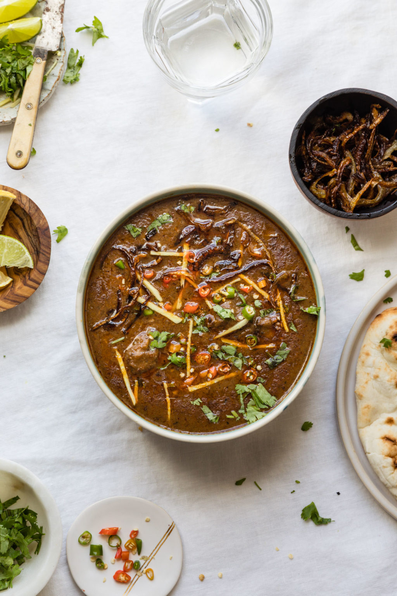

Nihari is a rich, slow-cooked meat stew flavored with spices and thickened with atta, or Pakistani & Indian-style durum whole wheat flour. Pakistani versions of Nihari are typically made with beef, but Nihari can be made with lamb, goat meat, or chicken. The word “nihari” comes from the root Arabic word “nahar”, meaning “day” or “morning”. This dish is called Nihari because originally, it was eaten in the morning. The history suggests that it started in Old Delhi, where it was eaten by Mughal nawabs and workmen to fuel them throughout the day.